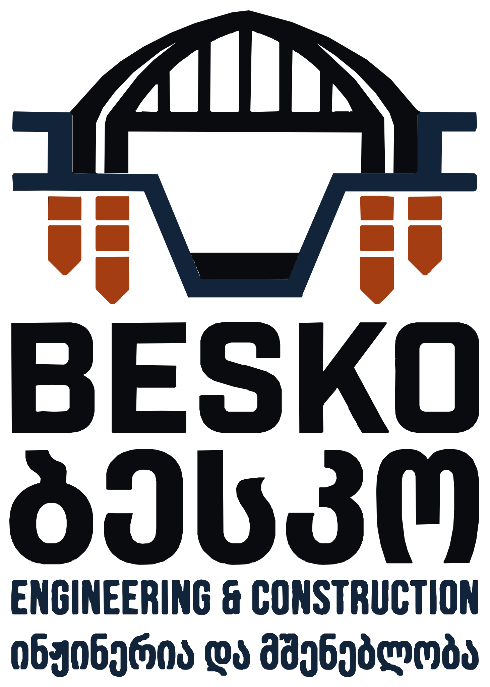

შეზღუდული პასუხისმგებლობის საზოგადოება „ბესკო“ არის ქართული სამშენებლო და საინჟინრო კომპანია, რომელიც ახორციელებს სახელმწიფო და მუნიციპალურ ინფრასტრუქტურულ პროექტებს მთელი საქართველოს მასშტაბით.
დაგვიკავშირდით
„ბესკო“ სპეციალიზირებულია სამოქალაქო და გეოტექნიკურ მშენებლობაში: ხიდების მშენებლობასა და რეაბილიტაციაში, ხიმინჯოვან საძირკვლებში, საყრდენ კედლებში, მეწყრული უბნების სტაბილიზაციასა და ნაპირსამაგრ ნაგებობებში, საავტომობილო გზების აღდგენასა და მშენებლობაში. ჩვენი დამკვეთები არიან ქალაქ თბილისის მუნიციპალიტეტის მერია, მუნიციპალიტეტები და სახელმწიფო უწყებები.
ახალი სახიდე გადასასვლელების მშენებლობა, არსებული ხიდების რეაბილიტაცია და გამაგრება.
ბურღვით-ჩასხმითი ხიმინჯები და რთულ გეოლოგიურ პირობებში საძირკვლების მოწყობა.
მონოლითური რკინაბეტონის საყრდენი კედლები, ანკერული და ხიმინჯოვანი კონსტრუქციები.
ფერდობების გამაგრება, დრენაჟი და საინჟინრო-გეოლოგიური ღონისძიებები.
მდინარის ნაპირების დაცვა, სანიაღვრე კოლექტორებისა და ჰიდროტექნიკური ნაგებობების აღდგენა.
გზების დაზიანებული მონაკვეთების აღდგენა, მშენებლობა და მოწყობის სამუშაოები.